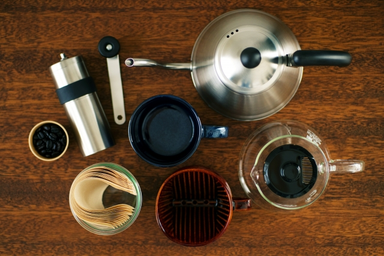
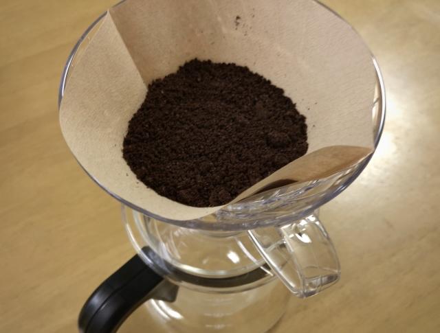
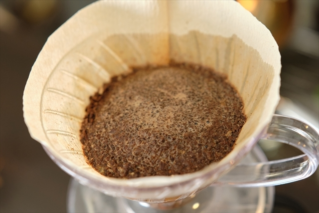
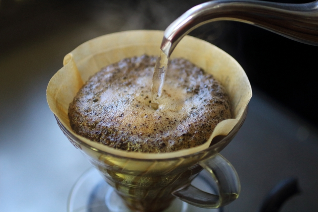
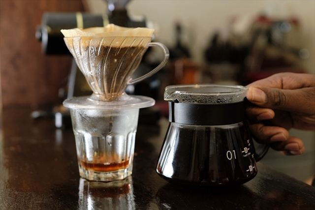
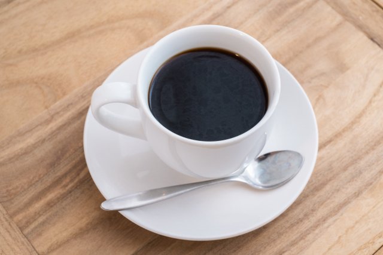
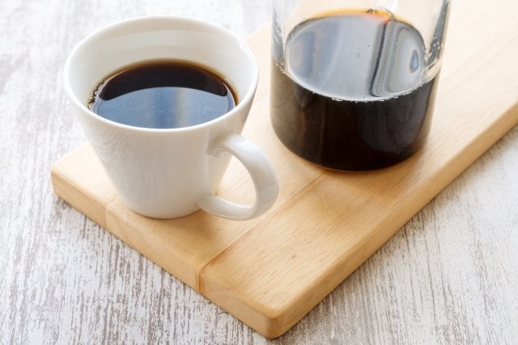

お家でコーヒーを淹れるなら、まずはやっぱりハンドドリップをおすすめします。ハンドドリップは用意する器具も少なく手軽ですが、かつ奥が深く自分好みのやり方を見つけることもできます。ドリップ中に漂うコーヒーの香りを感じれば、これから飲むコーヒーへの期待感も高まり、もっと味わい深くなること間違いなし。はじめてコーヒーの楽しみに触れるにはもってこいの淹れ方です。そんなハンドドリップの最も基本的なやり方をご紹介します。
用意するもの
- コーヒー豆
- 水(お湯)
- コーヒーミル
(↑豆が粉なら必要なし)
- メジャースプーン(または秤)
- ドリップポット(注ぎやすい細口のもの)
- ドリッパー
- ペーパーフィルター
- サーバー
コーヒー豆は、はじめてならスーパーで、UCCなどのリーズナブルなものを買いましょう。ミルをお持ちなら豆、なければ粉の状態のものを用意してください。
ドリップの際お湯を注ぐために使うドリップポットはなるべく細口のものが好ましいです。やかんなど注ぎ口が大きいものだと、ドリップがしづらくなってしまいます。
ドリッパーはドリップされたコーヒーが溜まる容器です。あったほうが良いですが、なければコーヒーカップに直接ドリッパーを乗せても構いません。
ジャンプ先
下準備

・お湯を沸かす
お湯の温度は沸騰直後から少し置いた95℃前後が良いとされています。豆を挽くなどのほかの準備をする前に火にかけておきましょう。
・計量する
豆とお湯を量ります。ここを丁寧にすることがおいしく作る重要なポイントです。とは言っても、分量のバランスは実は本当にさまざまです。調べてもこれといった決まった分量はありません。ですのでここでは例として、当サイトの記事担当が実際に淹れておいしかった分量の豆15g:お湯170gとします。(※水ではなく沸かした後のお湯で量ることに注意！)飲んでみて濃いと感じればお湯を増やすか豆を減らし、薄ければその逆に調整して、好みの分量を見つけてみてください。
・豆を挽く
計量した豆をミルで挽き粉にします。ミルによりますが、たいていはねじを回すことで細かさを調整できます。とりあえずは調整せずそのまま挽いてみれば良いでしょう。そこから粗ければ酸味が、細かければ苦味が出やすくなると簡単に覚えてください。
ジャンプ先
手順１:器具と粉をセット

サーバーの上にドリッパーを置き、ドリッパーにフィルターをセットします。そこに挽いたコーヒー豆を入れ、軽くゆすって平らにならします。
ジャンプ先
手順2:粉を蒸らす

いよいよドリップポットに入れたお湯を注いでいきます。まずは粉を”蒸らす”作業です。中心から「の」の字を書くようにひと回しだけ注いで、全体がまんべんなく濡れるようにしましょう。お湯を注ぐとき、フィルターにお湯が触れると風味が薄くなってしまうので気をつけてください。その後、このまま20秒ほど待ちます。
蒸らすことで豆の中に残っている炭酸ガスが抜け、この後お湯を注いだ時により成分が抽出されやすくなります。
ジャンプ先
手順3:コーヒーを抽出する

20秒経過したら、同様に「の」の字を描くようにして注いでいきます。このとき、平らにならした表面を荒らさないよう低い位置から優しく注いでください。うまくできていれば、お湯を注ぐと粉全体がぽっこりと蒸気で膨らんでいきます。この状態になることでお湯がまんべんなく粉に触れ、成分がよく抽出されます。一度に注ぎすぎるとこれが崩れてしまうので、崩れない程度に注ぎ、ふくらみがしぼんできたらまた注ぐことを数回繰り返して、お湯をすべて注ぎきります。
※膨らんだ粉の中で抽出し続けることで、お湯がフィルターの紙に触れないようにすることができます。
]
ジャンプ先
手順4:ドリッパーを外す

注いだお湯がすべて落ちきるのを待たずに、少し残してサーバーからドリッパーを外します。サーバーに入った抽出直後のコーヒーは上と下で濃度に差があるので、かるく混ぜれれば均等になります。
※上に残った泡は雑味のもとになります。落とし切らないようにしましょう。
ジャンプ先
できあがり！

サーバーからコーヒーカップに注ぎ、できたてのコーヒーを楽しんでください。手間をかけて作ったコーヒーは、缶コーヒーを飲むよりもずっと味わい深いもののはずです。
また、ハンドドリップは手作業ですから、淹れるたびに少し味わいが変わるのがわかると思います。「今日は上手に淹れられたな」「次はもうちょっと濃い方がいいかな...」なんてコーヒーの味に一喜一憂するのも楽しみのひとつですよ。

いろいろな淹れ方
コーヒーはその淹れ方もさまざま。ていねいに手作業で、または多彩な器具を使って、あるいはコーヒーマシンで
さっと手軽に...。どう淹れるかによって味や香りの特徴が変化するだけでなく、淹れる過程を見たり
体験したりするのも楽しいものです。ここでは、知るだけでおもしろいコーヒーの淹れ方を8つ簡単にご紹介します。